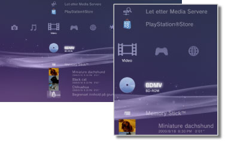

Video > Kategorien Video
Kategorien Video
Følgende ikoner vises under  (Video). Ikonene som vises, varierer avhengig av bruksvilkårene.
(Video). Ikonene som vises, varierer avhengig av bruksvilkårene.

 |
BD datatjeneste | Administrativ data som brukes av Blu-ray Disc-er (BD-er) lagres. |
|---|---|---|
 |
Let etter Media Servere | Innlede et søk etter DLNA Media Servers som er tilkoplet det samme nettverket. |
 |
Media Server | Kople til DLNA Media Servers og spille videofiler som er lagret der. Ikonet som vises varierer avhengig av type server. |
 |
PlayStation®Store | Vis informasjon fra PlayStation®Store. Dette ikonet vises kun i land og regioner hvor videobutikken til PlayStation®Store er tilgjengelig. |
 |
BD-ROM/BD-R/BD-RE | Spill av en Blu-ray Disc (BD). |
 |
DVD-ROM / DVD-R / DVD+R / DVD-RW / DVD+RW | Spille en DVD eller en AVCHD-disk. |
 |
Datadisk | Spille videofiler som er lagret på kompatible, skrivbare diskmedia slik som en CD-R eller DVD-R. |
 |
Memory Stick™ | Spill av videofiler som er lagret på Memory Stick™-medier.* |
 |
SD Memory Card | Spill av videofiler som er lagret på et SD-minnekort.* |
 |
CompactFlash® | Spill av videofiler som er lagret på CompactFlash®.* |
 |
PSP™ (PlayStation®Portable) | Spill av videofiler som er lagret på et Memory Stick™-medie i PSP™-systemet. |
 |
PSP™ (PlayStation®Portable) | Spill av videofiler som er lagret i PSP™go-systemets systemminne. |
 |
Digitalkamera | Vis videofiler som er lagret på et digitalkamera som er kompatibelt med PS3™-systemet. |
 |
WALKMAN®/ATRAC Audio Device（WALKMAN®） | Spill av videofiler som er lagret på en WALKMAN®/ATRAC Audio Device (WALKMAN®). |
 |
ATRAC Audio Device | Spill av videofiler som er lagret på en ATRAC Audio Device. |
 |
USB enhet | Spill av videofiler som er lagret på en USB-masselagringsenhet. |
 |
Filmer fra digitalt-kamera | Spill av videofiler som er lagret i DCIM-mappen på lagringsmediet. |
|
(mappe) | Dette ikonet vises for mapper som ble opprettet på lagringsmediene ved hjelp av en PC. |
 |
(filer som er lagret på harddisken) | Spill av videofiler som er lagret på PS3™-systemets harddisk. Miniatyrbilder vises. |
 |
(data lastes ned til harddisk) | Dette ikonet vises for videofiler som er lastet ned på harddisken. Når det startes, blir dataene installert og videofilen kan spilles. |
| * |
Det kreves en kompatibel USB-adapter (følger ikke med) for å bruke lagringsmedier med enkelte modeller. Når den brukes med en USB-adapter, vises lagringsmediene som |
|---|
 (USB enhet).
(USB enhet).Tips
- For detaljer om DLNA, se
 (Innstillinger) >
(Innstillinger) >  (Nettverksinnstillinger) > [Media Server kontakt] denne veiledningen.
(Nettverksinnstillinger) > [Media Server kontakt] denne veiledningen. - For at systemet skal kunne vise opphavsrettbeskyttede Blu-ray-disker med en oppløsning på 1080p, må systemet kobles til en enhet som er kompatibel med HDCP-standarden (High-bandwidth Digital Content Protection) ved å bruke en HDMI-kabel.
- Miniatyrbilder kan ikke vises i enkelte typer opphavsrettbeskyttede videofiler.
- Når du spiller av en BD med innhold som er begrenset av foreldrekontrollen, begrenses avspillingen i henhold til foreldrekontrollnivået som er angitt på PS3™-systemet. Foreldrekontrollnivået for BD kan justeres under (Innstillinger) >
 (Sikkerhetsinnstilling).
(Sikkerhetsinnstilling). - Når du spiller av en DVD med innhold som er begrenset av foreldrekontrollen, kan det være påkrevd med et passord for å spille av innhold. Passordet kan endres under (Innstillinger) > (Sikkerhetsinnstilling).
- Innholdet med foreldrekontroll-begrensninger vises som
 . Du kan åpne for å slippe slikt innhold ved å skrive inn et firesifret passord. Passordet kan innstilles eller endres under (Innstillinger) > (Sikkerhetsinnstillinger).
. Du kan åpne for å slippe slikt innhold ved å skrive inn et firesifret passord. Passordet kan innstilles eller endres under (Innstillinger) > (Sikkerhetsinnstillinger). - BD-er med disklås vises som
 . Hvis du vil spille av innhold på slike disker, må du angi passordet som ble angitt av diskprodusenten.
. Hvis du vil spille av innhold på slike disker, må du angi passordet som ble angitt av diskprodusenten. - Utleieinnhold som lastes ned fra Video Store i PlayStation®Store, vises som
 .
. - I sjeldne tilfeller fungerer ikke disker og andre medier på riktig måte når de spilles av på PS3™-systemet. Dette er hovedsakelig på grunn av forskjeller i produksjonsprosessen eller kodingen av programvaren.
- Hvis en enhet som ikke er kompatibel med HDCP-standarden (High-bandwidth Digital Content Protection), kobles til systemet med en HDMI-kabel, kan ikke video og/eller audio overføres fra systemet.
Blu-ray Disc (BD) lokal lagring
Hvis en feilmelding om utilstrekkelig lokal lagringsplass vises under BD-avspilling, slett unødvendige filer på harddisken for å frigjøre plass.
Lokal lagring er et datalagringsområde som er definert i BD-ROM profil 1.1 / 2.0 standardene. Denne dataen lagres på harddisken til PS3™-systemet.